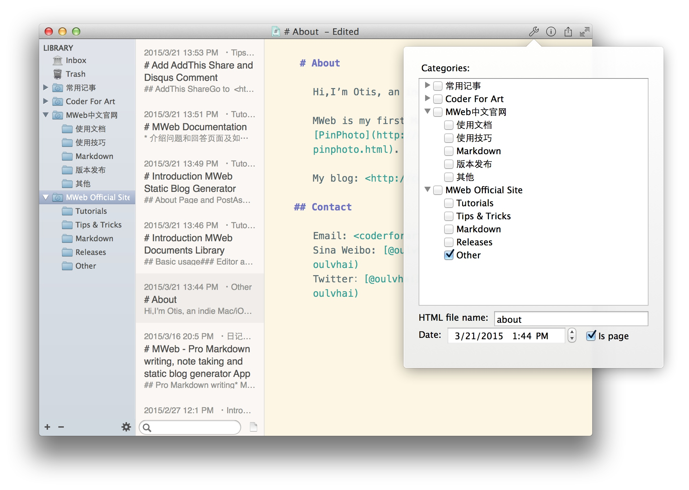

As Wordpress and other blogging platforms, MWeb also has Page and Post. Page can use for About Us, Contact ect... If you want to set a document to Page, just click Setting button and enable Is page, like below:

CMD + L to open the documents library.
Editor Only:CMD + 1, Two Panes:CMD + 2, Three Panes:CMD + 3. The editor area will not resize when the view pattern change.
Read On →Markdown is intended to be as easy-to-read and easy-to-write as is feasible.
Readability, however, is emphasized above all else. A Markdown-formatted document should be publishable as-is, as plain text, without looking like it's been marked up with tags or formatting instructions.
Markdown's syntax is intended for one purpose: to be used as a format for writing for the web.
GoodSync syncs files between your computer, mobile devices, FTP, SFTP, Amazon S3, Google Drive, SkyDrive, WebDAV, Azure.
Read On →